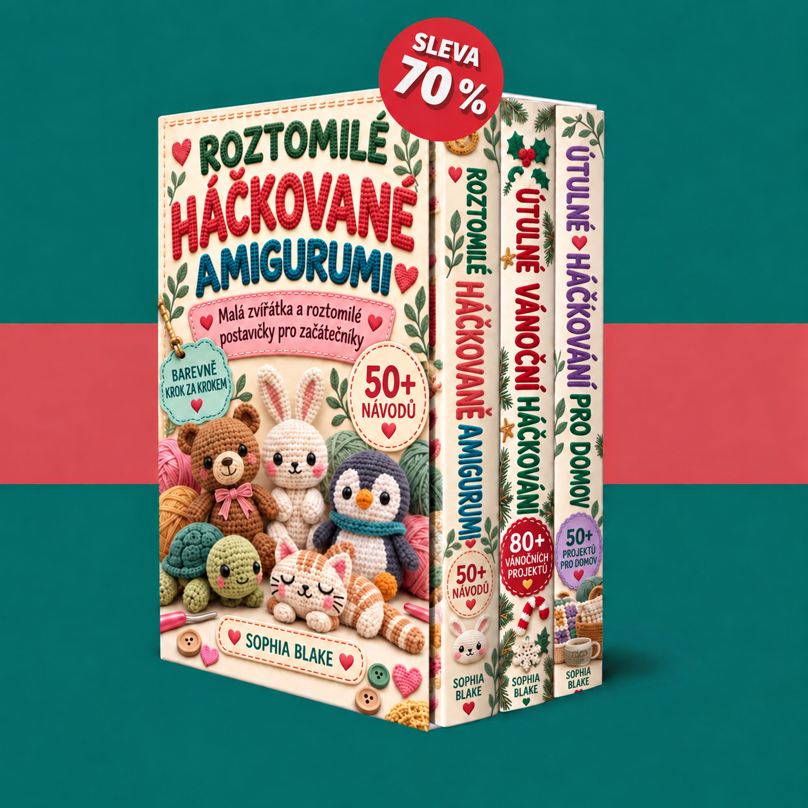

Váš přístup je potvrzen. Objevte své tři knihy o háčkování a tři další ilustrované soubory PDF s návody na amigurumi, vánoční dekorace a útulný domov.

Načítání vašich knih…
Pro používání členské sekce zapněte JavaScript. Soubory PDF můžete také otevřít přímo pomocí odkazů níže.